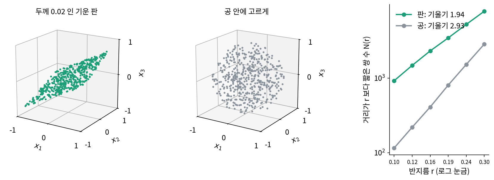

내재 차원: 반지름을 넓히며 이웃 수를 센다
기운 평면에서는 규칙 x₃ = 0.5x₁ + 0.3x₂를 우리가 알고 시작했다. 실제 자료는 그렇지 않다. 사진, 소리, 센서 기록을 받았을 때 그 자료가 어떤 규칙을 따르는지는 모르고, 점들이 판 위에 정확히 놓이지도 않는다. 판에서 조금씩 떠 있거나, 판이 평평하지 않고 휘어 있을 수도 있다. 그래도 「이 점들은 칸 수보다 적은 방향으로만 퍼져 있다」는 것만은 점들만 보고 알아낼 수 있을까?
지도 앱에서 내 위치 둘레의 편의점을 찾아본 적이 있을 것이다. 반경을 1km에서 2km로 넓히면 가게 수는 대략 네 배가 된다. 넓이가 반지름의 제곱으로 늘기 때문이다. 바닷가 해안 도로를 따라서만 가게가 있는 곳이라면 반경을 두 배로 해도 가게 수는 두 배뿐이다. 반경을 넓힐 때 가게 수가 느는 빠르기가, 가게들이 몇 방향으로 퍼져 있는지를 알려 준다.
역사: 노이즈인가, 숫자 몇 개가 정하는 움직임인가
1980년 무렵 물리학자들은 실험에서 잰 불규칙한 기록을 앞에 두고 같은 물음을 품었다. 이 출렁임은 수많은 원인이 뒤섞인 노이즈일까, 아니면 숫자 몇 개가 정해진 규칙대로 바뀌어 가는데도 겉으로는 불규칙해 보이는 것일까? 두 경우는 주파수 성분(스펙트럼)으로는 가를 수 없었다. 둘 다 스펙트럼이 몇 개의 뾰족한 주파수로 끊기지 않고 넓게 이어진 모양으로 나오기 때문이다.
실마리는 측정한 값 하나의 기록을 여러 칸짜리 점으로 바꾸는 데서 나왔다. 연달아 잰 값 m개를 묶어 m칸짜리 점 하나로 삼는다(패커드 외 1980, 타켄스 1981). 출렁임이 숫자 몇 개로 정해진다면 다음 값은 앞의 값 몇 개로 정해지므로, 이 점들은 m칸 공간 안의 낮은 차원 모양 위에 모인다. 노이즈라면 다음 값이 앞의 값과 상관없으니 점들이 m칸을 모두 채운다. 남은 일은 점들이 몇 차원 모양 위에 있는지 재는 것이었다. 공간을 작은 상자로 나눠 점이 든 상자를 세는 방법이 먼저 나와 있었지만, 1982년 그린사이드(Henry Greenside) 외는 이 방법을 시험해 보고 값이 너무 느리게 모여서(어쩌면 아예 모이지 않아서) 실험 기록에 쓰기 어렵다고 보고했다.
1983년 그라스베르거(Peter Grassberger)와 프로카치아(Itamar Procaccia)는 『Physical Review Letters』에 「이상한 끌개의 특성화(Characterization of Strange Attractors)」를, 『Physica D』에 「이상한 끌개의 이상함을 재기(Measuring the Strangeness of Strange Attractors)」를 내고, 상자 대신 점의 쌍을 세자고 했다. 두 점 사이 거리가 r보다 짧은 쌍의 비율을 r을 바꿔 가며 세면, 쌍의 비율이 r의 몇 제곱으로 느는지가 차원이 된다는 것이다. 비슷한 생각은 그보다 앞서 나뭇가지처럼 자라는 입자 덩어리의 차원을 재는 데 쓰였고(토머스 위튼(Thomas Witten)·샌더(Leonard Sander) 1981), 타켄스(Floris Takens)도 1982년 거리를 좌표 차이 가운데 가장 큰 것으로 재는 같은 방법을 따로 내놓았다. 쌍만 세면 되는 이 방법은 쉬워서 곧 여러 분야로 퍼졌다. 그런데 그라스베르거 자신은 2007년에 쓴 해설(『Scholarpedia』)에서, 이 방법이 쉽게 짜이는 탓에 측정 노이즈, 모자란 점 수 같은 어려움을 얕잡아 본 논문이 많아서 관련 문헌의 상당 부분이 의심스럽다고 적었다. 재는 법이 쉽다고 잰 값이 늘 믿을 만한 것은 아니라는 교훈도 이 방법과 함께 남았다.
판과 공: 반지름을 두 배로 하면 쌍은 몇 배가 되나
같은 방법을 두 점 구름에 써 보자. 하나는 자유도를 셀 때 쓴 기운 평면 x₃ = 0.5x₁ + 0.3x₂ 위의 점 500개를 판의 수직 방향으로 조금(두께 0.02) 흩은 것이고, 다른 하나는 반지름 1인 공 안에 고르게 흩은 점 500개다. 판의 한 변은 2라서 두께 0.02는 한 변의 100분의 1이다. 둘 다 칸 수는 3이다. 판은 규칙 하나를 「거의」 따르고, 공은 아무 규칙도 따르지 않는다. 규칙을 모른다고 치고, 점 사이 거리만 써서 둘을 가를 수 있을까?
점 500개에서 나오는 쌍은 124,750개다. 거리가 0.1보다 짧은 쌍은 판에서 925개, 공에서 116개였다. 반지름을 0.2로 두 배 늘리면 판은 3,718개로 4.02배, 공은 877개로 7.56배가 되었다(sources/low-dimension/s2_dim.py). 반지름을 두 배로 늘릴 때 판은 2²배 가까이, 공은 2³배 가까이 늘었다. 반지름 0.1에서 0.3 사이 여섯 군데에서 센 값을 로그 눈금에 찍으면 거의 곧은 선이 되고, 그 기울기는 판이 1.94, 공이 2.93이다.

두 구름은 똑같이 3칸 공간에 있지만, 점이 실제로 퍼져 있는 방향의 수는 판이 2, 공이 3이다. 칸 수와 상관없이 자료가 실제로 퍼져 있는 방향의 수를 내재 차원 (자료가 실제로 움직이는 방향의 수, intrinsic dimension)이라 하고, 칸 수는 겉보기 차원이라 부른다. 규칙을 아는 자료에서는 내재 차원이 자유도와 같다. 반지름을 키울 때 이웃 쌍의 수가 느는 빠르기로 잰 내재 차원은, 로그 눈금 그래프에서 N(r)이 그리는 직선의 기울기다. 식으로 적으면 다음과 같다.
판의 기울기가 2보다 조금 작은 1.94, 공의 기울기가 3보다 조금 작은 2.93인 것은 가장자리 탓이다. 가장자리 근처의 점은 반지름을 키워도 바깥쪽에는 이웃이 없어서 이웃이 덜 는다. 그래서 k는 자연수로 딱 떨어지지 않고, 「2쯤」 「3쯤」으로 읽는다.
판의 두께를 키우면 어떻게 될까? 아래 위젯에서 점 구름을 끌어 돌려 보며 두께 슬라이더를 움직여 보자. 두께가 0에서 1로 커지는 동안 잰 차원 k는 2 근처에서 3 근처로 오른다. 그렇다면 판이 얼마나 얇아야 「판」이라 부를 수 있을까? 문제 5에서 따져 본다.
ML에서: 그림 자료의 내재 차원
포프(Phillip Pope) 외 네 명의 「그림의 내재 차원과 그것이 학습에 미치는 영향(The Intrinsic Dimension of Images and Its Impact on Learning)」(ICLR 2021)은 널리 쓰는 그림 자료들의 내재 차원을 쟀다. 쓴 방법은 위의 쌍 세기와 생각이 같다. 점마다 가장 가까운 이웃 몇 개까지의 거리가 몇 번째 이웃으로 갈수록 얼마나 빨리 커지는지를 보아 차원을 어림한다(레비나·비켈의 최대우도 추정. 최대우도 추정은 지금 가진 자료가 나올 가능성을 가장 크게 만드는 값을 고르는 방법이다). 이웃을 3, 5, 10, 20개까지 볼 때마다 값이 달라졌는데, 손글씨 숫자 MNIST(28 × 28 = 784칸)는 7~13, 작은 사진 CIFAR-10(32 × 32 × 3 = 3,072칸)은 13~26, ImageNet(224 × 224 × 3 = 150,528칸)은 26~43이었다. 칸 수와 비교하면 MNIST는 60분의 1~112분의 1, ImageNet은 3,501분의 1~5,790분의 1이다.
같은 논문은 내재 차원이 낮은 자료일수록 신경망이 적은 예제로 배운다는 것도 실험으로 보였다. 내재 차원을 조절할 수 있게 만든 그림 자료로 분류기를 학습시켰더니, 정해 둔 시험 오차에 이르는 데 필요한 예제 수가 내재 차원을 따라 늘었다. 칸 수만 늘리면 어떻게 되는지는 아래 문제 9에서 따져 본다.
문제 4. 반경을 두 배로
세 곳에서 반경을 1km에서 2km로 넓히며 가게 수를 세었다. 해안 도로를 따라 늘어선 가게는 12개에서 24개, 평평한 주택가의 가게는 12개에서 48개가 되었다. 층마다 가게가 빽빽한 큰 상가 단지 안에서, 반경을 공처럼 위아래로도 넓혀 세었더니 12개에서 96개가 되었다. 세 곳의 가게는 각각 몇 차원으로 퍼져 있다고 볼 수 있는가?

두 배, 네 배, 여덟 배니까 차원은 2, 4, 8 아니에요?

해안 도로의 가게가 2차원으로 퍼져 있다는 건 무슨 뜻일까요?

아, 도로는 한 줄이니까 1차원이어야 해요. 반경을 두 배로 하면 도로 길이도 두 배라서 가게도 두 배인 거고요. 배수가 차원이 아니라, 2를 몇 번 곱했는지가 차원이에요.

log₂ 2 = 1, log₂ 4 = 2, log₂ 8 = 3이야. 도로는 1, 주택가는 2, 상가 단지는 3. 기울기 식에서 ln 2로 나눈 거랑 같아.

동아리 단톡방에 공지를 퍼뜨릴 때도 한 명이 두 명에게만 전하면 한 단계마다 두 배인데, 그걸 단계 수로 세는 거랑 비슷하네요.
문제 5. 두께 0.3인 판을 가까이서 보면
두께 0.3인 기운 판(한 변 2)에 점 2,000개를 흩고, 반지름 r이 0.03~0.09 사이일 때와 0.3~0.6 사이일 때 각각 쌍의 수 N(r)의 기울기를 쟀다. 두 범위에서 잰 차원은 같을까? 다르다면 어느 쪽이 「참」인가?
판이니까 둘 다 2쯤일 거예요. 돌려 볼게요… 어? 0.03~0.09에서는 2.85, 0.3~0.6에서는 1.99예요.
하나는 3에 가깝고 하나는 2에 가깝네. 점은 같은데 왜 다르지?
반지름 0.05짜리 공을 판 안 한가운데에 놓았다고 생각해 봐요. 두께 0.3과 견주면 그 공은 어떻게 보일까요?
두께보다 훨씬 작으니까 공이 판 안에 쏙 들어가요. 그 안에서는 위아래로도 점이 고르게 있으니 3차원처럼 보여요.
반지름을 0.3~0.6 쪽으로 키우면요?

두께 0.3보다 커지니까… 위아래는 금방 막히고 옆으로만 이웃이 늘어요. 그래서 2차원이 되는 거고요.

그럼 어느 게 답이에요? 두께가 있으니 3이 맞는 거 아니에요?

어느 눈금으로 보느냐에 따라 둘 다 맞아요. 멀리서 보면 종이 한 장이고, 돋보기로 보면 두께가 있는 판이죠. 잰 차원에는 늘 「어느 반지름에서」가 붙어 있어야 해요. 그라스베르거가 걱정한 것도 이런 일이었어요. 점이 적으면 작은 반지름에서는 쌍이 너무 적어 셀 수 없고, 큰 반지름에서는 가장자리가 끼어들어서, 믿을 만한 범위가 좁거든요.

위젯에서 판 두께를 키울 때 잰 차원이 올라간 것도, 반지름 0.1~0.3은 그대로인데 두께가 반지름만큼 커졌기 때문이네요.

극한을 r → 0으로 잡느냐 r → ∞로 잡느냐에 따라 답이 다른 함수 같아요. 점근적인 모양이 구간마다 따로 있어요.
문제 6. 이웃을 몇 개까지 볼까
포프 외(ICLR 2021)는 ImageNet의 내재 차원을 가까운 이웃 3개로 어림했을 때 26, 20개로 어림했을 때 43으로 보고했다. 같은 자료인데 왜 값이 다른가? 어느 쪽을 믿어야 하는가?
이웃을 많이 본 쪽이 정확하겠죠. 샘플이 크면 좋은 거니까 43이요.
이웃을 20개까지 보면, 이웃 3개만 볼 때보다 그 점에서 얼마나 먼 곳까지 보게 될까요?
더 먼 곳까지요. 아, 문제 5의 반지름이네요. 이웃 수가 반지름 노릇을 하는 거예요.
그러면 문제 5처럼 보는 눈금에 따라 차원이 다르게 보이는 거고, 어느 하나가 틀린 게 아닐 수도 있어. 그림은 가까이에서 보면 몇 방향으로만 움직이는데, 조금 멀리까지 보면 다른 방향도 끼어드는 거지.
그래요. 거기에 또 하나가 있어요. 이웃이 적으면 점마다 어림한 값이 크게 흔들리고, 많으면 덜 흔들리는 대신 한쪽으로 치우쳐요. 논문도 이 맞바꿈 때문에 이웃 수를 3, 5, 10, 20으로 바꿔 가며 잰 값을 표에 나란히 실었어요.
결국 중요한 건 150,528이 아니라 수십이라는 자릿수네요. 26이든 43이든 칸 수의 수천분의 일이니까요.
시험 점수를 반 평균으로 보느냐 학년 평균으로 보느냐에 따라 「잘했다」의 기준이 달라지는 것 같아요. 어디까지 보고 견줬는지를 같이 적어야 하네요.